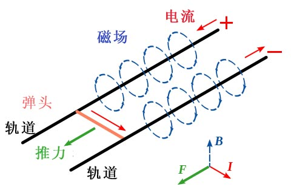

电磁炮介绍
| 组成结构 | 原理解释 | 性能特点 | 分类 | 作战用途 | 主要问题 | 总体评价 |
|---|
一，组成结构
电磁炮利用电磁力沿导轨发射炮弹的武器。它主要由能源、加速器、开关三部 分组成。能源通常采用可蓄存10～100兆焦耳能量的装置。当前实验用的能源有 蓄电池组、磁通压缩装置、单极发电机，其中单极发电机是最有前途的能源。
加速器是把电磁能量转换成炮弹动能，使炮弹达到高速的装置。主要有：使用低压 直流单极发电机供电的轨道炮加速器和离散或连续线圈结构的同轴同步加速器两大类。 开关是接通能源和加速器的装置，能在几毫秒之内把兆安级电流引进加速器中，其中的 一种是由两根铜轨和一个可在其中滑动的滑块组成。 来源——百度百科"
二，原理解释
19世纪，英国科学家法拉第发现了法拉第电磁感应定律，该定律表明磁场中的电荷和电流会受到洛仑兹力的作用， 即位于磁场中的导线在通电时会受到一个力的推动，同时，如果让导线在磁场中作切割磁力线的运动，导线上也会产生 电流。
20世纪初，有人提出利用洛仑兹力发射炮弹的设想。在两次世界大战中，法国、德国和日本都曾研究过电磁炮。 第二次世界大战以后，其他国家也进行过这方面的研究。
相关图解如下：

 -----------------------------------------
bilibili视频解说
-----------------------------------------
bilibili视频解说
-----------------------------------------
bilibili视频解说